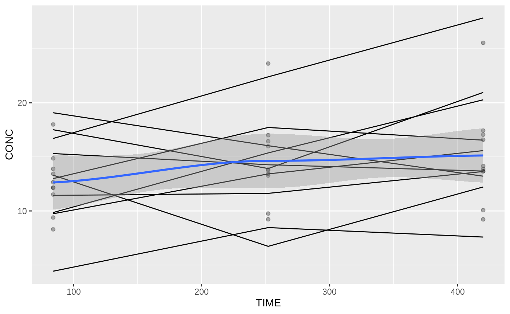
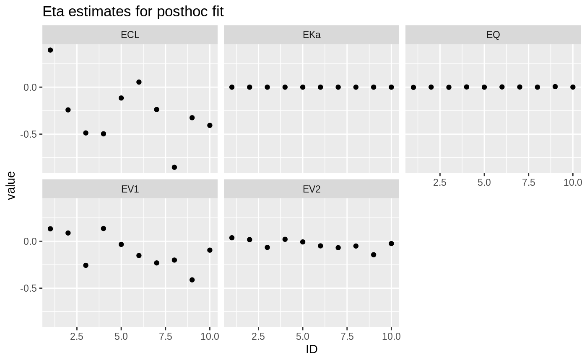
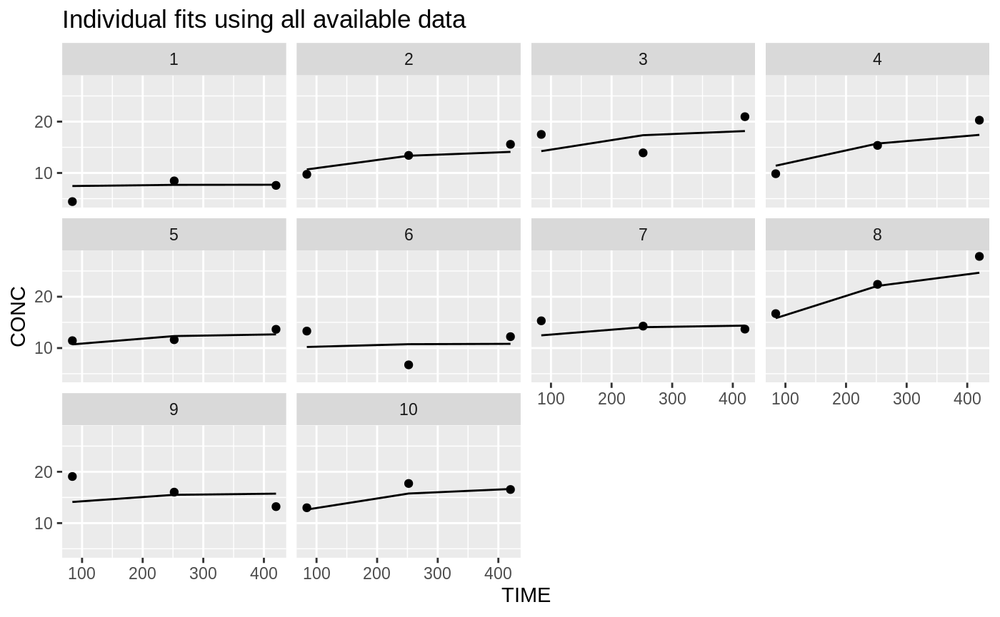
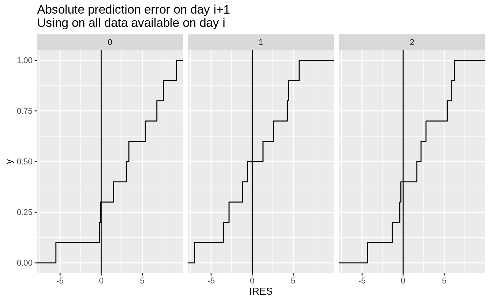
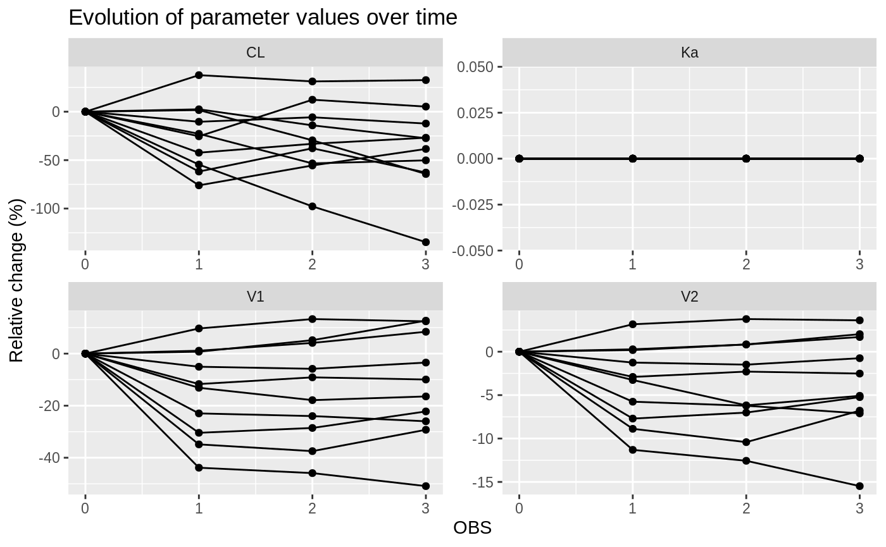
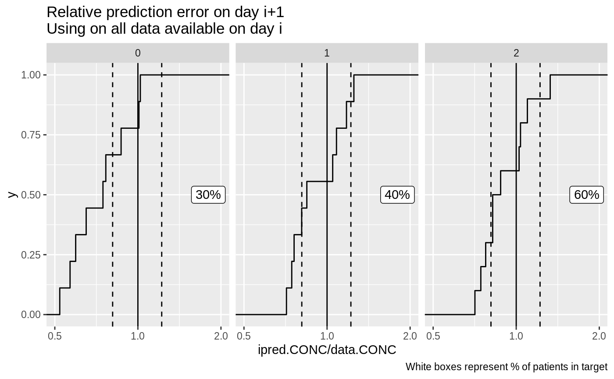

Qualification of non-linear mixed effects models for population PK/PD is a well-studied problem. We can evaluate goodness-of-fit through several standard metrics like LL, AIC, by evaluating a visual predictive check or even evaluating key prediction metrics through a numerical predictive check.
Evaluating how well a model predicts the future for a specific individual is less well-studied. We have settled on using ‘prospective evaluation’. This technique splits the individual data in a training and validation dataset: anything before a given timepoint t_i is used to calculate the individual fit, anything after t_i is used to evaluate how well this fit predicts the future. By repeating this exercise for every possible t_i, we can evaluate how well we predict the future at day 1, day 2, etc.
This vignette shows how to use tdmore in such an evaluation. This is also called a prospective evaluation, and has been (rudimentarily) implemented in the PsN proseval routine.
We use an example model from literature.
# Model taken from literature: Soulele, K., et al. # 'Population pharmacokinetics of fluticasone propionate/salmeterol using two different dry powder inhalers.' # European Journal of Pharmaceutical Sciences 80 (2015): 33-42." myModel <- nlmixr::nlmixrUI(function(){ ini({ TVKa <- 3.87 TVCL <- 659 # L/h TVV1 <- 56900 # L TVV2 <- 5550 # L TVQ <- 259 # L/h EKa ~ 0.04507129 # 0.2123**2 ECL ~ 0.1535856 # 0.3919**2 EV1 ~ 0.09223369 # 0.3037**2 EV2 ~ 0.208301 # 0.4564**2 EQ ~ 0.1015697 # 0.3187**2 EPS_ADD <- 1.91 EPS_PROP <- 0.117 }) model({ Ka <- TVKa * exp(EKa) CL <- TVCL * exp(ECL) V1 <- TVV1 * exp(EV1) V2 <- TVV2 * exp(EV2) Q <- TVQ * exp(EQ) K12 <- Q/V1 K21 <- Q/V2 d/dt(center) = - CL/V1 * center - K12*center + K21 * periph d/dt(periph) = K12*center - K21 * periph CONC = center / V1 * 1000 CONC ~ prop(EPS_PROP) + add(EPS_ADD) }) }) m1 <- tdmore(myModel)
Without a source dataset, we can generate data from an in silico simulation. Below, we use the standard treatment regimen of 88mcg twice-daily, with blood samples every week.
regimen <- rbind( data.frame(TIME=0, AMT=500), #loading dose data.frame( #maintenance dose TIME=sort( c(8+(0:20)*24, 20+(0:20)*24) ), #at 08:00 and 20:00 AMT=88 ) ) obs <- data.frame( TIME=(3*24+12)+(0:2)*7*24, #observe every 3rd day of the week at noon CONC=NA ) # predict generates N samples of a tdmorefit with uncertainty # If we use the population fit, then this will represent a sample across the population. # I.e. N virtual subjects # In a model with covariates, you should either sample the covariates from an external database, # or generate them from a distribution. N <- 10 population <- estimate(m1, regimen=regimen) dbPred <- predict(population, newdata=obs, se=T, level=NA, mc.maxpts=N) %>% rename(ID=sample) %>% select(ID, TIME, CONC) # We add residual error by sampling from the original model # This is probably too pessimistic; residual error is rarely truly random... db <- dbPred %>% model.frame(m1, data=., se=TRUE, level=NA) #sample residual error ggplot(dbPred, aes(x=TIME, y=CONC)) + geom_point(alpha=0.3) + geom_line(aes(group=ID), data=db) + geom_smooth()

posthocFit <- dataTibble(object=m1, regimen=regimen, observed=db) %>% posthoc(se.fit=F, control=list(factr=1e14)) posthocFit %>% ungroup() %>% mutate(coef = map(fit, ~tibble::enframe(coef(.x)))) %>% tidyr::unnest(coef) %>% ggplot(aes(x=ID, y=value)) + geom_point() + facet_wrap(~name) + labs(title="Eta estimates for posthoc fit")

ggplot(db, aes(x=TIME, y=CONC)) + geom_point() + geom_line(data= posthocFit %>% tidyr::unnest(ipred) ) + facet_wrap(~ID) + labs(title="Individual fits using all available data")

A retrospective dataset can also be used. Aggregating this data across individuals may be difficult if there are large differences in treatment, observation schedule or adherence. Furthermore, a decision should be made up-front on how to treat missing values.
As an example: If we evaluate how well we predict day3 using day 1+2 data, should we…
This can be solved by using all data to generate an individual fit, and predicting (interpolating) missing data.
## Input data: 'm1', the tdmore model ## Input data: 'db' with columns ID, TIME and CONC ## Input data: 'regimen' with columns TIME and AMT. ## Note that with true retrospective data, the regimen would be different per individual prosevalDb <- dataTibble(object=m1, regimen=regimen, observed=db) %>% proseval(control=list(factr=1e14))
We now have a list of prospective evaluations for every subject. Suppose we want to use the model to modify the dose for next week. In that case, we want to check how well a prospective evaluation predicts next week.
# Calculate predictions for all data, using the fits target <- prosevalDb %>% left_join(db %>% tidyr::nest(data=c(TIME, CONC)), by="ID") %>% # add original data tidyr::unnest(cols=c(data, ipred), names_sep=".") %>% # unnest, creating data.CONC and ipred.CONC columns group_by(ID, OBS) %>% filter(row_number() == OBS[1]+1) %>% #pick the next week as a target mutate(IRES = data.CONC-ipred.CONC) ggplot(target, aes(x=IRES)) + stat_ecdf() + geom_vline(xintercept=0) + facet_wrap(~OBS) + labs(title="Absolute prediction error on day i+1\nUsing on all data available on day i")

parameters <- prosevalDb %>% group_by(ID, OBS) %>% group_modify(~predict(.x$fit[[1]], newdata=0)) %>% #predict time=0 tidyr::gather(key=key, value=value, Ka:V2) %>% group_by(ID, key) %>% mutate(relative=(value-value[1])/value) parameters %>% ggplot(aes(x=OBS, y=relative*100)) + facet_wrap(~key, scales="free") + geom_point() + geom_line(aes(group=ID)) + labs(title="Evolution of parameter values over time", y="Relative change (%)")

The better a model can predict the future, the more accurate it can calculate the dose to reach a given target. A rough indication for “% on target” is to calculate IPRED / DV. If this is higher than 1, then the model is overpredicting (and will underdose). If this is lower than 1, the model is underpredicting (and will overdose). Assuming your target window is e.g. between 10 and 15, the log-mean is exp( mean( log(c(10,15)) ) ) and the relative error should be between 0.81 and 1.22.
ggplot(target, aes(x=ipred.CONC / data.CONC)) + stat_ecdf() + scale_x_log10(limits=c(0.5, 2)) + geom_vline(xintercept=1) + geom_vline(xintercept=c(0.81, 1.22), linetype=2) + geom_label(aes(x=1.8, y=0.5, label=label), data=. %>% group_by(OBS) %>% summarize(label=paste0( round(mean(between(ipred.CONC/data.CONC, 0.81, 1.22))*100), "%"))) + facet_wrap(~OBS) + labs(title="Relative prediction error on day i+1\nUsing on all data available on day i", caption="White boxes represent % of patients in target")
## `summarise()` ungrouping output (override with `.groups` argument)
library(tdmore) library(dplyr) library(purrr) library(tidyr) library(ggplot2) set.seed(1234) # Model taken from literature: Soulele, K., et al. # 'Population pharmacokinetics of fluticasone propionate/salmeterol using two different dry powder inhalers.' # European Journal of Pharmaceutical Sciences 80 (2015): 33-42." myModel <- nlmixr::nlmixrUI(function(){ ini({ TVKa <- 3.87 TVCL <- 659 # L/h TVV1 <- 56900 # L TVV2 <- 5550 # L TVQ <- 259 # L/h EKa ~ 0.04507129 # 0.2123**2 ECL ~ 0.1535856 # 0.3919**2 EV1 ~ 0.09223369 # 0.3037**2 EV2 ~ 0.208301 # 0.4564**2 EQ ~ 0.1015697 # 0.3187**2 EPS_ADD <- 1.91 EPS_PROP <- 0.117 }) model({ Ka <- TVKa * exp(EKa) CL <- TVCL * exp(ECL) V1 <- TVV1 * exp(EV1) V2 <- TVV2 * exp(EV2) Q <- TVQ * exp(EQ) K12 <- Q/V1 K21 <- Q/V2 d/dt(center) = - CL/V1 * center - K12*center + K21 * periph d/dt(periph) = K12*center - K21 * periph CONC = center / V1 * 1000 CONC ~ prop(EPS_PROP) + add(EPS_ADD) }) }) m1 <- tdmore(myModel) regimen <- rbind( data.frame(TIME=0, AMT=500), #loading dose data.frame( #maintenance dose TIME=sort( c(8+(0:20)*24, 20+(0:20)*24) ), #at 08:00 and 20:00 AMT=88 ) ) obs <- data.frame( TIME=(3*24+12)+(0:2)*7*24, #observe every 3rd day of the week at noon CONC=NA ) # predict generates N samples of a tdmorefit with uncertainty # If we use the population fit, then this will represent a sample across the population. # I.e. N virtual subjects # In a model with covariates, you should either sample the covariates from an external database, # or generate them from a distribution. N <- 10 population <- estimate(m1, regimen=regimen) dbPred <- predict(population, newdata=obs, se=T, level=NA, mc.maxpts=N) %>% rename(ID=sample) %>% select(ID, TIME, CONC) # We add residual error by sampling from the original model # This is probably too pessimistic; residual error is rarely truly random... db <- dbPred %>% model.frame(m1, data=., se=TRUE, level=NA) #sample residual error ggplot(dbPred, aes(x=TIME, y=CONC)) + geom_point(alpha=0.3) + geom_line(aes(group=ID), data=db) + geom_smooth() posthocFit <- dataTibble(object=m1, regimen=regimen, observed=db) %>% posthoc(se.fit=F, control=list(factr=1e14)) posthocFit %>% ungroup() %>% mutate(coef = map(fit, ~tibble::enframe(coef(.x)))) %>% tidyr::unnest(coef) %>% ggplot(aes(x=ID, y=value)) + geom_point() + facet_wrap(~name) + labs(title="Eta estimates for posthoc fit") ggplot(db, aes(x=TIME, y=CONC)) + geom_point() + geom_line(data= posthocFit %>% tidyr::unnest(ipred) ) + facet_wrap(~ID) + labs(title="Individual fits using all available data") ## Input data: 'm1', the tdmore model ## Input data: 'db' with columns ID, TIME and CONC ## Input data: 'regimen' with columns TIME and AMT. ## Note that with true retrospective data, the regimen would be different per individual prosevalDb <- dataTibble(object=m1, regimen=regimen, observed=db) %>% proseval(control=list(factr=1e14)) # Calculate predictions for all data, using the fits target <- prosevalDb %>% left_join(db %>% tidyr::nest(data=c(TIME, CONC)), by="ID") %>% # add original data tidyr::unnest(cols=c(data, ipred), names_sep=".") %>% # unnest, creating data.CONC and ipred.CONC columns group_by(ID, OBS) %>% filter(row_number() == OBS[1]+1) %>% #pick the next week as a target mutate(IRES = data.CONC-ipred.CONC) ggplot(target, aes(x=IRES)) + stat_ecdf() + geom_vline(xintercept=0) + facet_wrap(~OBS) + labs(title="Absolute prediction error on day i+1\nUsing on all data available on day i") parameters <- prosevalDb %>% group_by(ID, OBS) %>% group_modify(~predict(.x$fit[[1]], newdata=0)) %>% #predict time=0 tidyr::gather(key=key, value=value, Ka:V2) %>% group_by(ID, key) %>% mutate(relative=(value-value[1])/value) parameters %>% ggplot(aes(x=OBS, y=relative*100)) + facet_wrap(~key, scales="free") + geom_point() + geom_line(aes(group=ID)) + labs(title="Evolution of parameter values over time", y="Relative change (%)") ggplot(target, aes(x=ipred.CONC / data.CONC)) + stat_ecdf() + scale_x_log10(limits=c(0.5, 2)) + geom_vline(xintercept=1) + geom_vline(xintercept=c(0.81, 1.22), linetype=2) + geom_label(aes(x=1.8, y=0.5, label=label), data=. %>% group_by(OBS) %>% summarize(label=paste0( round(mean(between(ipred.CONC/data.CONC, 0.81, 1.22))*100), "%"))) + facet_wrap(~OBS) + labs(title="Relative prediction error on day i+1\nUsing on all data available on day i", caption="White boxes represent % of patients in target")